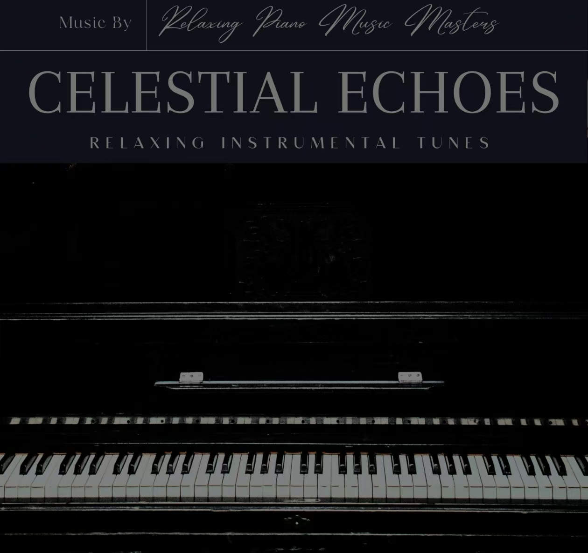

我的三大爱好 - 音乐、摄影与阅读
除了编程，这些爱好陪伴我度过了许多时光。它们不仅是放松的方式，更是灵感的来源，让我在技术之外感受到生活的丰富多彩。
爱好与成长
音乐让我在代码调试受挫时平静，摄影教会我用不同视角观察世界，阅读则为编程思维提供了跨领域的启发。
爱好时间分配
每周：音乐(8小时)、摄影(5小时)、阅读(10小时)
这些时间投入让我保持创造力与专注力的平衡。
音乐欣赏 - 心灵的栖息地
我的音乐清单
| 曲目名称 | 音乐风格 | 艺术家 | 聆听场景 |
|---|---|---|---|
| CELESTIAL ECHOES | RELAXING INSTRUMENTAL | Wawy Poww Wise Wistng | 阅读时 |
| 竹林深处 | 中国传统乐器 | 未知 | 编程疲惫时 |
| City Lights | New Age | Various Artists | 夜晚独处时 |
音乐与我
从16岁开始，我养成了每天听音乐的习惯。特别是《CELESTIAL ECHOES》这类舒缓的纯音乐，能让我在复杂的代码逻辑中保持清晰的思路。
摄影创作 - 用镜头记录时光
从HUAWEI P20到现在的微单相机，摄影已成为我观察世界的方式。以下是部分代表作品：

《成都老街》
15岁时用HUAWEI 拍摄，获成都七中摄影大赛奖

《校园光影》
捕捉成都七中教学楼的午后阳光，记录高中时光
《锦里夜色》
用慢门拍摄成都锦里古街，展现城市烟火气
阅读思考 - 知识的海洋
我的阅读书单
- 技术类：《JavaScript高级程序设计》《CSS世界》
- 人文类：《人类简史》《万历十五年》
- 摄影类：《美国纽约摄影学院摄影教材》
- 小说类：《三体》《百年孤独》
阅读感悟
阅读《人类简史》让我理解技术发展的宏观脉络，而《CSS世界》则教会我用系统思维解决前端布局问题。阅读与编程看似无关，却在底层思维上相通。